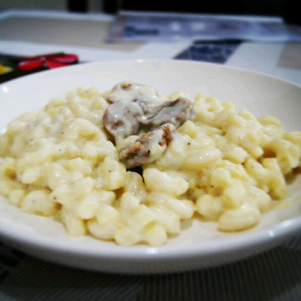

Mac & Cheese

Simple Macaroni and Cheese
A very quick and easy fix to a tasty side-dish. Fancy, designer mac and
cheese often costs forty or fifty dollars to prepare when you have so many
exotic and expensive cheeses, but they aren't always the best tasting.
This recipe is cheap and tasty.
Ingredients
- 1 (8 ounce) box elbow macaroni
- ¼ cup butter
- ¼ cup all-purpose flour
- ½ teaspoon salt
- ½ teaspoon salt
- 2 cups shredded Cheddar cheese
Steps
-
Bring a large pot of lightly salted water to a boil. Cook elbow macaroni
in the boiling water, stirring occasionally until cooked through but
firm to the bite, 8 minutes. Drain.
-
Melt butter in a saucepan over medium heat; stir in flour, salt, and
pepper until smooth, about 5 minutes. Slowly pour milk into butter-flour
mixture while continuously stirring until mixture is smooth and
bubbling, about 5 minutes. Add Cheddar cheese to milk mixture and stir
until cheese is melted, 2 to 4 minutes.
- Fold macaroni into cheese sauce until coated.